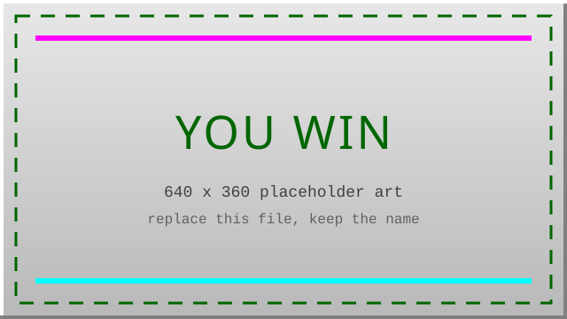

The Fourth Decade — art preview
dev tool, not part of the game. Anything marked missing is a broken path in index.html or a file that was never generated.
loc_intro.svg — intro card (INTRO_LOCATION.image)
win.svg — win card (END_TEXT.win.image)

gameover.svg — game-over card (END_TEXT.gameover.image)
walker_0/1/2.svg — the progress-bar sprite, at 1x, 4x, and on a 30px track
bg-tile.svg — the page background, tiled 8×
the location and end cards — real photographs, and the generated placeholders still to be replaced